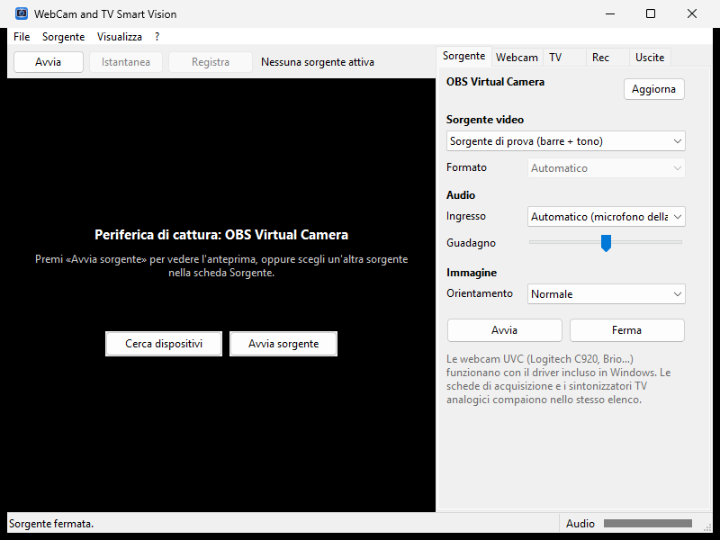
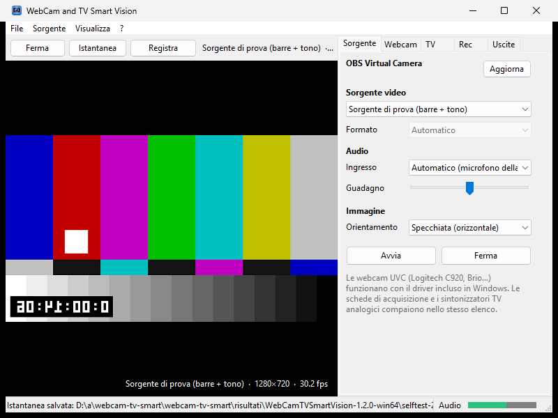
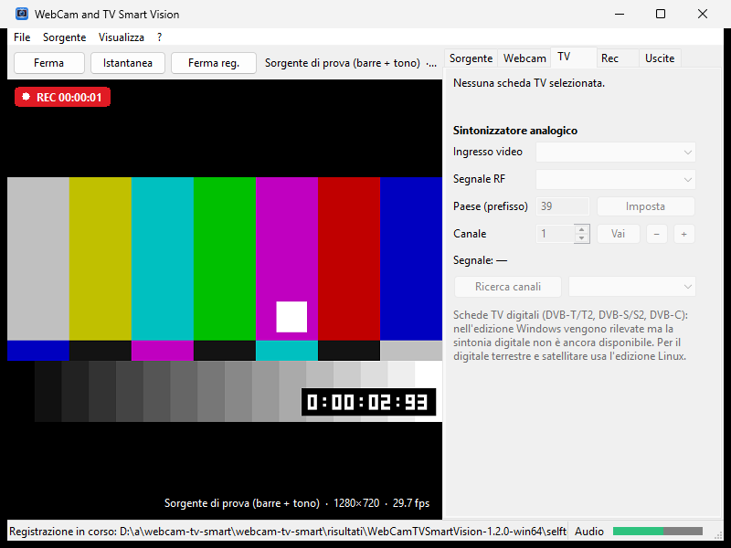
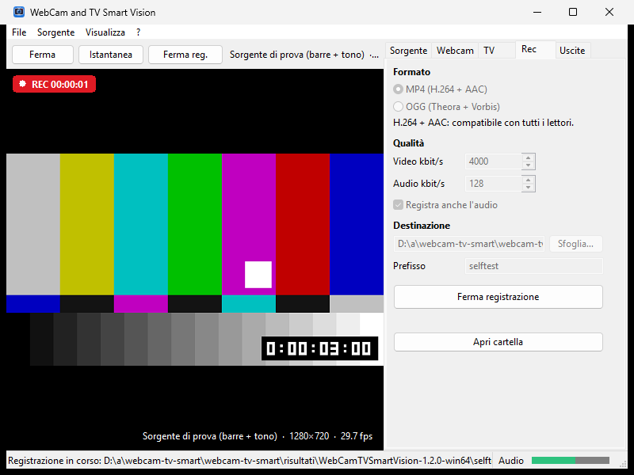
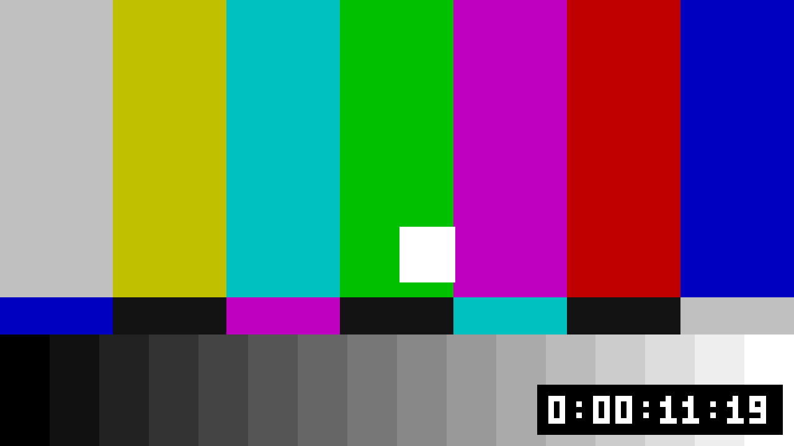
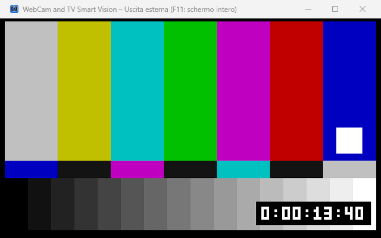

WebCam and TV Smart Vision per Windows è un unico eseguibile portatile: non si installa, non modifica il registro di sistema e non richiede DLL, .NET, codec o driver aggiuntivi. Usa DirectShow per il video e le API audio classiche di Windows, presenti da XP a Windows 11, e contiene al proprio interno i codificatori per MP4 e OGG.
| Pacchetto | Sistemi | Processore |
|---|---|---|
WebCamTVSmartVision-1.2.0-winxp-x86-sse2.zip | Windows XP SP3 a 32 bit e tutti i successivi (Vista, 7, 8, 10, 11 a 32 e 64 bit) | x86 con SSE e SSE2: Pentium 4, Pentium M, Athlon 64, Atom o più recenti |
WebCamTVSmartVision-1.2.0-win64.zip | Windows 7, 8, 8.1, 10 e 11 a 64 bit | qualsiasi processore a 64 bit |
In caso di dubbio su un PC moderno scegli win64; su un PC con Windows XP o con Windows a 32 bit usa winxp-x86-sse2. Se il processore non ha SSE2 (Pentium III, Athlon XP) il programma lo segnala all'avvio e si chiude.
| Webcam | Qualsiasi webcam riconosciuta da Windows: Logitech C920, C920 HD Pro, C922, Brio, StreamCam e in generale le webcam UVC, che usano il driver già incluso in Windows (da XP SP2). Non serve installare il software del produttore. |
|---|---|
| Schede video | Schede di acquisizione e sintonizzatori TV analogici con driver WDM (compaiono nello stesso elenco delle webcam). |
| Audio | Microfono della webcam o qualsiasi ingresso audio di Windows; un'uscita audio per il ponte (facoltativa). |
| Spazio | Circa 2 MB per il programma; per le registrazioni circa 30 MB al minuto a 4000 kbit/s. |
https://github.com/fabionet/webcam-tv-smart/releases e scarica lo zip adatto al tuo sistema (capitolo 1).| File nella cartella | Contenuto |
|---|---|
WebCamTVSmartVision.exe | Il programma. |
Guida-Windows-WebCam-TV-Smart-Vision.pdf | Questa guida (si apre anche con F1). |
LEGGIMI.txt, LICENZA.txt, LICENZE-TERZE-PARTI.txt | Note rapide e licenze. |
Le impostazioni vengono salvate in %APPDATA%\WebCamTVSmartVision\settings.ini. Per "disinstallare" basta cancellare la cartella del programma e, se vuoi, quel file.
All'avvio il programma cerca le periferiche di cattura. Il nome della periferica compare in grassetto in cima alla scheda Sorgente, accanto al tasto Aggiorna, nella barra sopra l'anteprima e nell'angolo in basso dell'immagine insieme a risoluzione e fotogrammi al secondo.

Se la periferica usata l'ultima volta non è collegata, il programma non passa in silenzio alla sorgente di prova: mostra Periferica non rilevata con il nome ricordato.
| Elemento | Funzione |
|---|---|
| Menu File · Sorgente · Visualizza · ? | Tutti i comandi, con i tasti rapidi indicati a fianco. |
| Avvia / Ferma | Avvia o ferma la sorgente selezionata (F6). |
| Istantanea | Salva un'immagine PNG nella cartella di destinazione (Ctrl+S). |
| Registra / Ferma reg. | Avvia o ferma la registrazione (Ctrl+R). |
| Testo a destra dei pulsanti | Nome della sorgente, risoluzione e fotogrammi al secondo misurati. |
| Schede Sorgente · Webcam · TV · Rec · Uscite | Descritte nei capitoli seguenti. Se il contenuto è più alto della finestra compare una barra di scorrimento. |
| Barra di stato | Ultimo messaggio (file salvato, periferiche trovate, errori) e indicatore del livello Audio. |
Un doppio clic sull'anteprima o F11 porta il video a schermo intero; Esc o un altro doppio clic torna alla finestra.

| Comando | Descrizione |
|---|---|
| Nome periferica + Aggiorna | Periferiche di cattura rilevate (o avviso) e nuova ricerca. |
| Sorgente video | La Sorgente di prova (barre colorate con orologio e tono a 440 Hz, utile per provare registrazione e uscite senza hardware) e tutte le periferiche video di Windows. |
| Formato | Codifica, risoluzione e fotogrammi al secondo offerti dalla periferica, per esempio MJPG 1920x1080 @ 30 fps. Automatico preferisce MJPG 1280×720 a 30 fps, leggero per la porta USB e per i PC meno recenti. La scelta è ricordata per ogni periferica. |
| Ingresso audio | Automatico usa il microfono che porta il nome della webcam (per esempio "Microfono (HD Pro Webcam C920)") o, se non c'è, l'ingresso predefinito di Windows; Nessun audio; oppure un ingresso specifico. |
| Guadagno | Amplificazione dell'audio da 0 a 2 volte (al centro = invariato); vale anche per la registrazione. |
| Orientamento | Normale, specchiata, capovolta, ruotata di 180° o di 90°. Non modificabile durante la registrazione. |
| Avvia / Ferma | Controllo manuale della sorgente. |
I controlli vengono letti dal driver della periferica, quindi l'elenco dipende dal modello. Con la Logitech C920 trovi di norma:
| Controllo | Consiglio d'uso |
|---|---|
| Luminosità, Contrasto, Saturazione, Nitidezza, Guadagno | Regolazioni dell'immagine. |
| Bilanc. bianco | Lascia Auto; toglilo e scegli la temperatura solo con luci colorate. |
| Controluce | Compensazione quando hai una finestra alle spalle. |
| Rete 50/60 Hz | Anti-sfarfallio: 1 = 50 Hz (Italia ed Europa), 2 = 60 Hz. |
| Esposizione | Con Auto la webcam si adatta alla luce; in manuale la luminosità resta costante. |
| Messa a fuoco | Togli Auto per riprendere documenti o oggetti vicini senza continui aggiustamenti. |
| Zoom, Pan, Tilt | Zoom digitale e spostamento dell'inquadratura. |

Questa scheda serve per le schede di acquisizione e i sintonizzatori TV analogici (PAL/SECAM/NTSC) con driver WDM, molto diffusi sui PC dell'epoca di Windows XP e 7, e per digitalizzare videoregistratori, videocamere e decoder collegati in composito o S-Video.
| Comando | Descrizione |
|---|---|
| Ingresso video | Ingresso fisico della scheda: Sintonizzatore TV, Video composito, S-Video… Per un videoregistratore scegli composito o S-Video. |
| Segnale RF | Antenna oppure Cavo: cambia la tabella delle frequenze dei canali. |
| Paese (prefisso) | Prefisso telefonico internazionale che determina la canalizzazione: 39 per l'Italia. Premi Imposta. |
| Canale, Vai, −, + | Sintonia diretta o canale precedente/successivo. |
| Segnale | Indica se il sintonizzatore aggancia una portante video. |
| Ricerca canali | Scorre tutti i canali e mette nell'elenco a destra quelli con segnale; scegline uno per sintonizzarlo. Il tasto diventa Interrompi durante la ricerca. |
L'audio delle schede analogiche arriva di solito dall'ingresso Linea della scheda audio o da un ingresso dedicato: selezionalo in Sorgente → Ingresso audio.

| Impostazione | Descrizione |
|---|---|
| MP4 (H.264 + AAC) | Si riproduce ovunque: Windows Media Player (da Windows 7), VLC, telefoni, televisori, YouTube. Video H.264 profilo Baseline, audio AAC-LC. |
| OGG (Theora + Vorbis) | Formato libero da brevetti; si apre con VLC, Firefox, Chrome. La codifica è più pesante: in Full HD su PC lenti alcuni fotogrammi vengono saltati. |
| Video kbit/s | Qualità video: 1500 per 640×480, 2500–4000 per 720p, 6000–8000 per 1080p. |
| Audio kbit/s | 128 è lo standard; 192 per la musica. |
| Registra anche l'audio | Se tolto, il file contiene solo il video. |
| Cartella, Sfoglia…, Prefisso | I file si chiamano Prefisso-AAAAMMGG-HHMMSS.mp4 (o .ogg, .png). Cartella predefinita: Video dell'utente. |

Il "ponte" inoltra in tempo reale lo stesso segnale dell'anteprima, senza interrompere la registrazione.

Scegli il Dispositivo (altoparlanti, HDMI del televisore, cuffie) e spunta Invia l'audio a questa uscita. Volume e Muto agiscono solo sul ponte, non sulla registrazione. Con una webcam usa il ponte audio in cuffia, altrimenti il microfono riprende gli altoparlanti (eco).
| Tasti | Azione | Menu |
|---|---|---|
| Ctrl+R | Avvia / ferma la registrazione | File |
| Ctrl+S | Istantanea PNG | File |
| F5 | Cerca dispositivi | Sorgente |
| F6 | Avvia / ferma la sorgente | Sorgente |
| F11 · doppio clic sul video | Schermo intero | Visualizza |
| Esc | Esce dallo schermo intero | |
| F1 | Apre questa guida | ? |
| Alt+F4 | Chiude il programma (completando un'eventuale registrazione) | File |
Il menu ? → Diagnostica dispositivi… apre nel Blocco note l'elenco completo di periferiche video, formati, controlli, schede TV digitali e dispositivi audio visti dal programma: è il testo da allegare quando chiedi assistenza.
WebCamTVSmartVision.exe --self-test C:\prova | Auto-test senza hardware: avvia la sorgente di prova, registra un MP4 e un OGG di circa 4 secondi, scatta un'istantanea, salva le schermate di ogni scheda e scrive selftest.log nella cartella indicata. Codice di uscita 0 se tutto è riuscito. |
… --self-test C:\prova --self-test-device | Come sopra, e in più prova la cattura dalla prima periferica video presente. |
| Sintomo | Che cosa fare |
|---|---|
| "Nessuna periferica di cattura rilevata" | Controlla cavo e porta USB e premi F5. In Gestione dispositivi la webcam deve comparire sotto Fotocamere o Dispositivi di acquisizione immagini senza punto esclamativo. |
| La webcam è nell'elenco ma "non si avvia" | È in uso da un altro programma (Teams, Zoom, browser, app Fotocamera): chiudilo. Su Windows 10/11 controlla i permessi di Privacy → Fotocamera per le app desktop. |
| "Impossibile collegare la periferica… prova un altro formato" | Il formato scelto richiede un decodificatore assente (tipico dei formati H264). Scegli MJPG o YUY2 nella scheda Sorgente. |
| Anteprima a scatti | Scegli un formato MJPG e una risoluzione più bassa; collega la webcam direttamente al PC e non a un hub; chiudi altri programmi pesanti. |
| Immagine che sfarfalla | Scheda Webcam → 50 Hz. |
| Livello Audio fermo, registrazione muta | Scegli esplicitamente l'ingresso in Sorgente → Ingresso audio; su Windows 10/11 controlla Privacy → Microfono; verifica che l'ingresso non sia disattivato nel pannello Suoni. |
| Fotogrammi saltati nella registrazione | Riduci risoluzione o bitrate; preferisci MP4 a OGG; su PC dell'epoca di XP resta a 640×480. |
| Windows Media Player di XP non apre l'MP4 | Windows XP non include i decodificatori H.264/AAC: usa VLC, oppure registra in OGG e riproducilo con VLC. |
| "Richiede un processore con istruzioni SSE2" | Il processore è troppo vecchio (Pentium III, Athlon XP): non è supportato. |
| Avviso SmartScreen o antivirus | Vedi capitolo 2. Il programma è software libero: i sorgenti sono pubblici e gli zip sono prodotti in automatico da GitHub Actions. |
| Scritte troppo piccole o grandi | Il programma segue il ridimensionamento dello schermo di Windows (100%, 125%, 150%). |
| Funzione | Windows | Linux |
|---|---|---|
| Webcam, formati, controlli, istantanee | sì (DirectShow) | sì (V4L2) |
| Registrazione MP4 e OGG | sì (codificatori interni) | sì (GStreamer) |
| Sintonizzatori TV analogici e ingressi composito/S-Video | sì | tramite V4L2 |
| TV digitale DVB-T/T2/S/S2/C | solo rilevamento | sì |
| Flussi di rete (RTSP, HTTP) | no | sì |
| Ponte verso secondo schermo e uscita audio | sì | sì |
| Webcam virtuale per altri programmi | no | sì (v4l2loopback) |
Ogni versione viene compilata e provata in automatico: l'auto-test completo (sorgente di prova, registrazione MP4 e OGG, istantanea, finestra esterna e cattura DirectShow da una videocamera virtuale) gira su Windows Server 2022 e Windows Server 2025, equivalenti a Windows 10 e 11, sia per l'eseguibile a 64 bit sia per quello a 32 bit. Per l'eseguibile a 32 bit viene inoltre controllato che usi soltanto funzioni di sistema presenti in Windows XP SP3. Su Windows XP, 7 e 8 reali e con una webcam fisica il programma non è stato ancora provato dall'autore: se incontri un problema, allega il testo di Diagnostica dispositivi a una segnalazione su GitHub.
Il codice è nella cartella windows/ del repository https://github.com/fabionet/webcam-tv-smart. Si compila da Linux con MinGW-w64:
sudo apt install mingw-w64 cmake ninja-build zip curl
git clone https://github.com/fabionet/webcam-tv-smart.git
cd webcam-tv-smart
windows/build.sh # crea i due zip in dist/WebCam and TV Smart Vision è software libero distribuito con licenza GNU GPL 3.0 o successiva. © 2026 Fabio Avallone. Include minih264, minimp4, stb_image_write, vo-aacenc, libogg, libvorbis e libtheora (vedi LICENZE-TERZE-PARTI.txt).